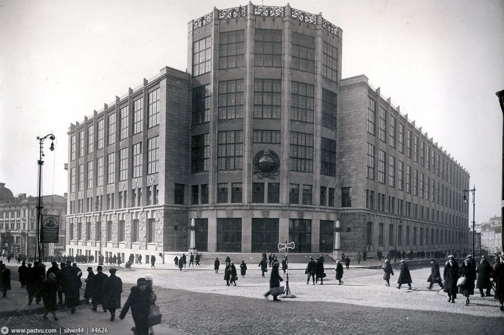

Здание Центрального телеграфа: между модерном и конструктивизмом
Памятник архитектуры, построенный в 1925—1927 годах по проекту архитектора И. И. Рерберга и инженера С. З. Гинзбурга.
История
В 1925 году Московское архитектурное общество (МАО) по заказу Наркомпочтеля провело конкурс на проектирование в Москве здания Центрального телеграфа. Победившие проекты, выполненные в духе авангарда, не удовлетворили заказчика, и Наркомпочтель заказал два проекта вне конкурса — председателю МАО А. В. Щусеву и инженеру И. И. Рербергу. Несмотря на острую критику проекта Рерберга со стороны архитектурного сообщества, которое негативно оценило как творческую направленность проекта, так и профессиональный уровень художественно-образного решения здания, строительный отдел Наркомпочтеля выбрал для реализации проект И. И. Рерберга.
Здание было построено в 1925—1927 годах по проекту И. И. Рерберга и инженера С. З. Гинзбурга. Строительство осуществляла строительная контора «Госстрой»[2]. Ранее на этом месте находилось здание Московского университетского благородного пансиона. Оно было снесено в начале 1910-х годов для строительства комплекса доходных домов страхового общества «Россия». В связи с началом Первой мировой войны строительство было прервано. При строительстве Центрального телеграфа были использованы уже сооружённые фундаменты и стены.
На протяжении многих десятилетий традицией была праздничная иллюминация Центрального телеграфа в виде движущихся картин.
В 1980 году к Московской Олимпиаде в глубине участка был выстроен новый корпус (архитекторы Ю. Н. Шевердяев, В. И. Уткин, А. П. Мелихов), стилистически единый с основным зданием.
В здании Центрального телеграфа с 1985 года работает ведомственный Музей истории Центрального телеграфа.
Описание здания
Представляет собой замкнутое каре между Никитским и Газетным переулками и Тверской улицы телеграфа с общей площадью помещений 40 тыс. м².
Вход расположен в заглублённой пятигранной башне, возвышающейся над карнизом на 10 метров. На башне установлен стеклянный вращающийся глобус.
Стиль здания — переходный от рационалистического модерна к конструктивизму. В основе здания монолитный железобетонный каркас, позволивший применить широкое остекление. Парапетная решётка башни, консоли фонарей и кронштейны для флагов отлиты из чугуна по рисункам художника Ф. И. Рерберга.
Интересные факты
- В 1930-х годах в здании размещались дикторские кабины Всесоюзного радио. В полдень 22 июня 1941 года В.М. Молотов именно из здания Центрального телеграфа зачитал сообщение о начале войны.
- На здании Центрального телеграфа ныне можно увидеть один из ранних проектов герба Советского Союза (1923): земной шар окружен колосьями, вверху красная звезда, по сторонам серп и молот.
- Со стороны Никитского переулка на здании Центрального телеграфа располагаются часы с боем. Колокол находится на крыше, над часами.
- На циферблате часов цифра «четыре» изображена в виде «IIII». Общепринятый формат для циферблатов, в то время как на часах-курантах Спасской башни в виде «IV».